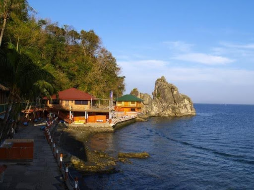
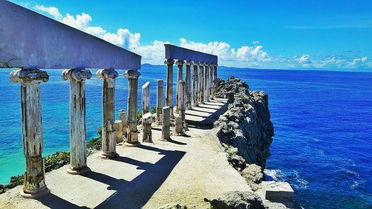
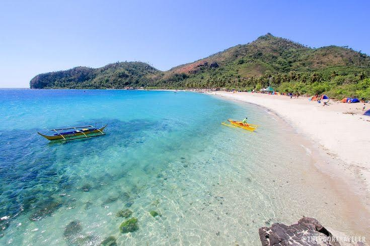
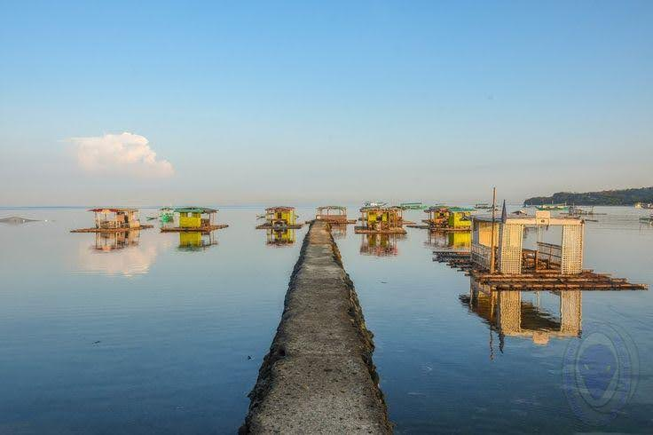
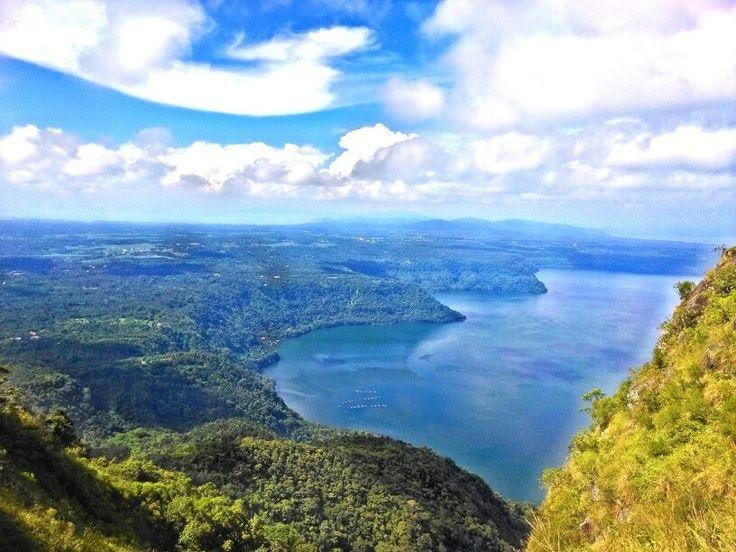
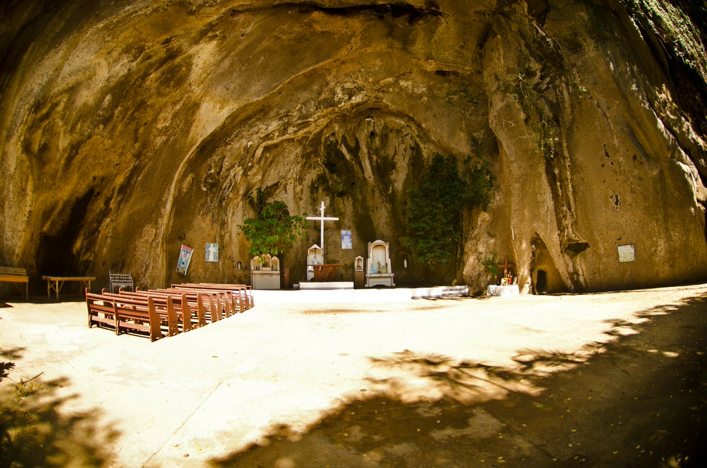
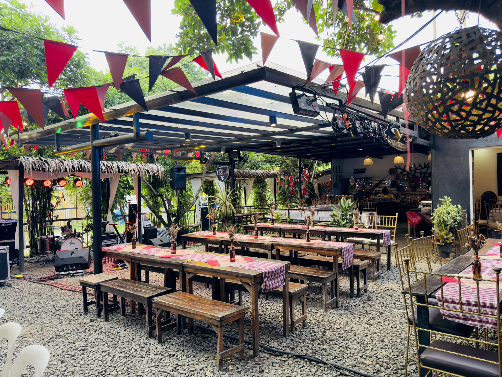
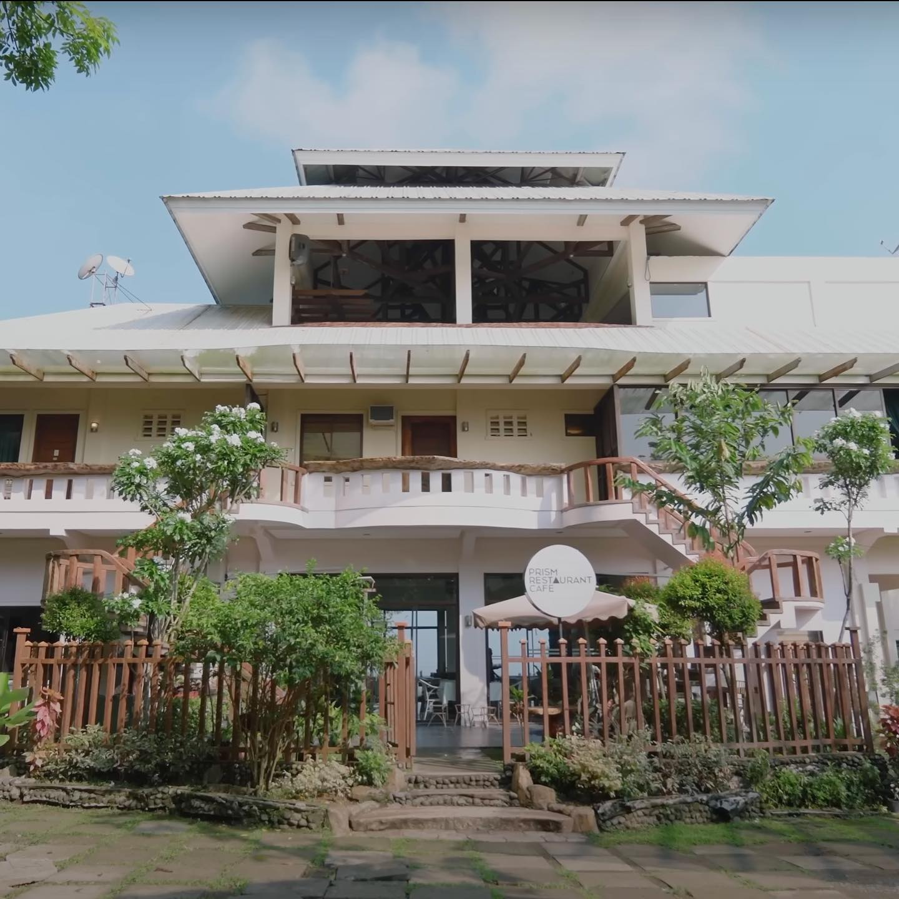
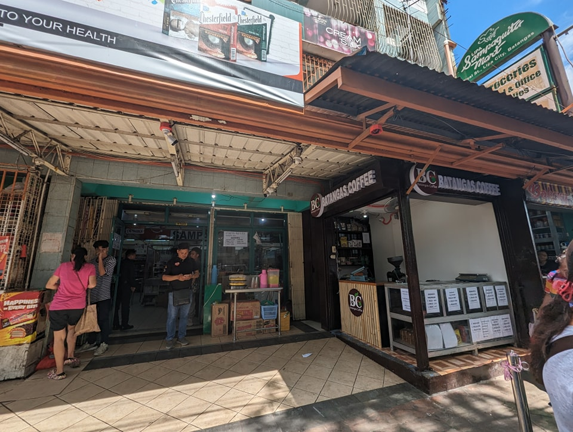
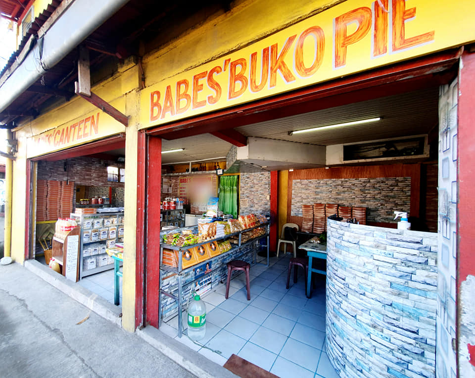

Nature
Nature
Laiya Beach
A popular white-sand beach destination in San Juan.

Nature
Anilao (Mabini)
Diving capital of the Philippines.

Nature
Fortune Island
Greek-style ruins with turquoise waters.

Nature
Masasa Beach
Crystal-clear waters in Tingloy.

Nature
Matabungkay Beach
Calm waters and floating cottages.

Nature
Mount Maculot
Famous for “The Rockies” viewpoint.
Nature
Mt. Manabu
Beginner-friendly hiking trail.
Nature
Taal Volcano
Volcano within a lake within a volcano.
 Heritage
Heritage
Taal Basilica
Largest Catholic church in Asia.
 Heritage
Heritage
Padre Pio Shrine
National pilgrimage site.
 Heritage
Heritage
Chapel on the Hill
Peaceful circular chapel in Nasugbu.

Heritage
Simbahang Bato
Church carved from rock formations.
 Heritage
Heritage
Taal Heritage Town
Spanish-era houses and museums.

Food & Dining
TAGGO Grill & Resto
Filipino-style grill dining.
 Food & Dining
Food & Dining
Cucina de Jardin
Garden-style restaurant in Taal.

Food & Dining
Prism Restaurant Cafe
Overlooking Taal Lake.

Pasalubong
Batangas Coffee & Pasalubong Center
Local coffee beans and delicacies.

Pasalubong
Babe’s Buko Pie
Famous Batangas delicacy.